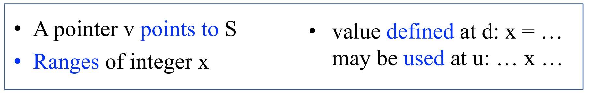
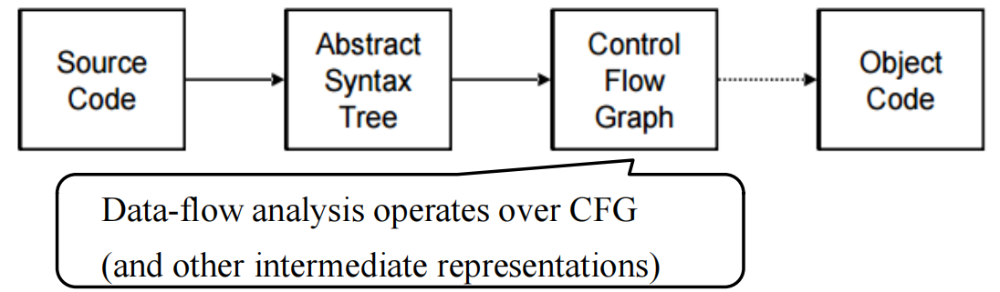
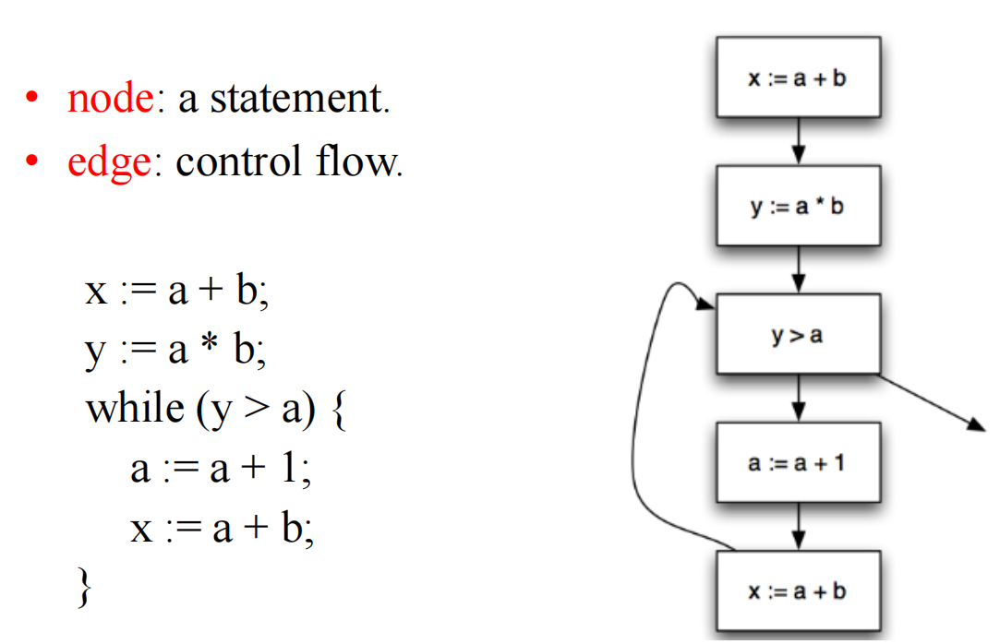
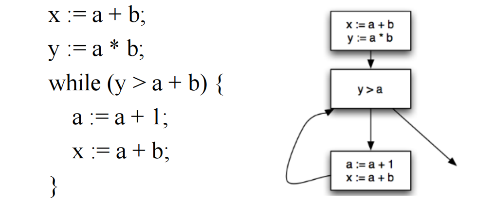
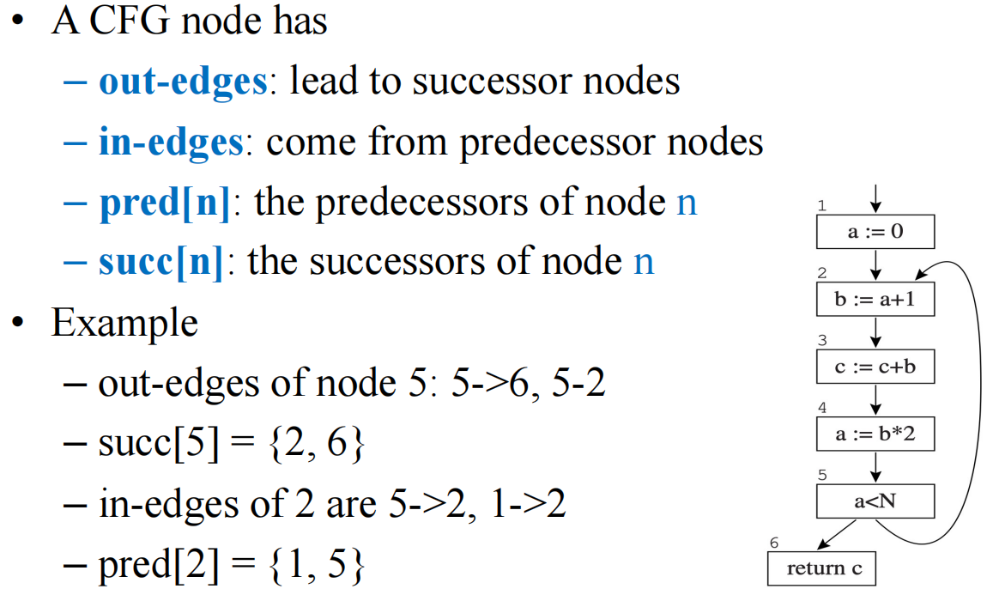
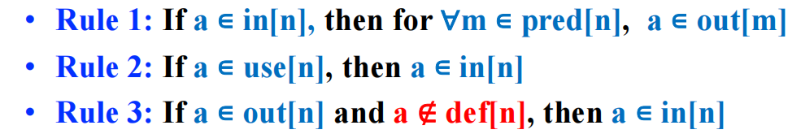
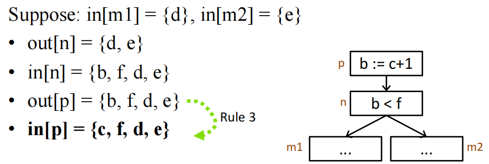
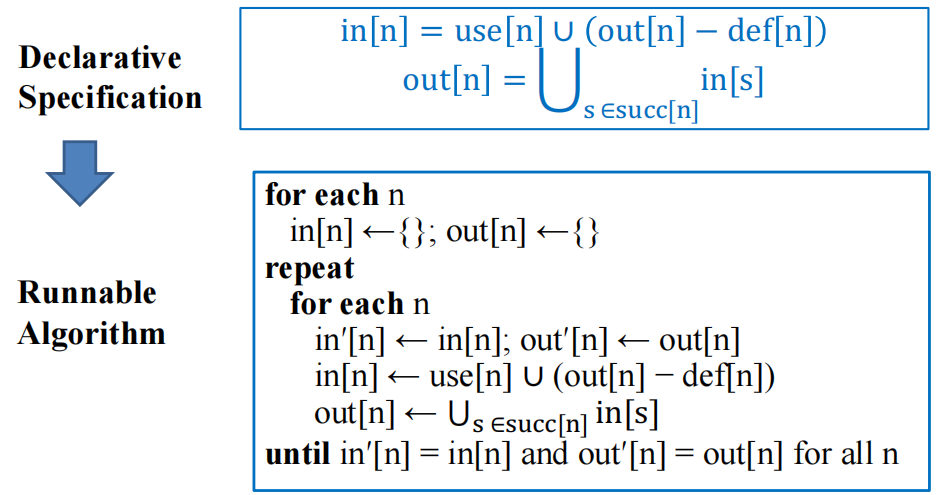
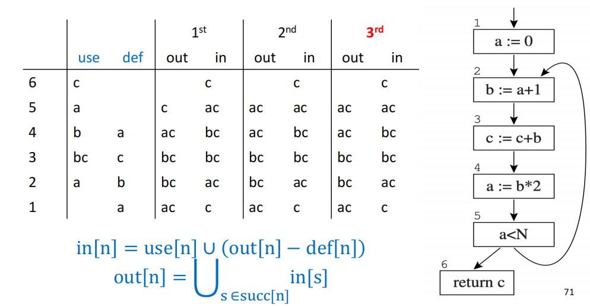

10 Liveness Analysis 活跃变量分析¶
参考资料：
- 姚培森老师2024~2025学年春夏ch10ppt
- wcjj的笔记
- 伟大的Gemini 2.5 pro deep research
追踪变量的生命周期，判断哪些之后还会被用到，哪些已经不再需要了
1 数据流分析¶
在不实际运行程序的情况下，通过静态分析程序的源代码或IR，来收集程序在（可能的）运行时关于数据如何“流动”的信息 。
1.1 编译优化¶
信息收集的层次： 编译器优化和分析可以在不同的粒度或范围上进行 ：
- 局部优化 (Local Optimization): 工作范围通常限制在单个基本块（Basic Block）内。这是最简单直接的分析层次。
- 过程内/全局优化 (Intraprocedural/Global Optimization): 分析范围扩展到整个函数或过程。此时，需要考虑基本块之间的控制流转移。
- 过程间/全程序优化 (Interprocedural/Whole-Program Optimization): 分析跨越多个函数或过程的边界，甚至在整个程序的范围内进行。这是最复杂但可能带来最大收益的分析层次，有时甚至在链接阶段进行（称为链接时优化，LTO）。
分析与转换： 编译器优化的过程通常遵循一个两步流程 ：
- 分析 (Analyze): 在这个阶段，编译器对程序的IR执行“程序分析”，以收集关于程序行为的“事实”。例如，确定一个变量在某点是否“活跃”，一个表达式的值是否为常量，或者一个指针可能指向哪些内存位置。 
- 转换 (Transform): 在收集到足够的事实之后，编译器会基于这些事实对程序进行等价的转换，目的是提升程序的性能（如速度、空间效率）或减小程序体积。常见的转换包括常量折叠（将运行时的常量计算提前到编译时完成）、死代码消除（移除不会影响程序最终结果的代码）、循环不变代码外提（将循环中每次迭代都计算相同结果的语句移到循环外）以及寄存器分配（将变量有效地分配到CPU寄存器中）等。
在不同的优化粒度范围，编译器会使用不同的中间表示，例如 Local 时使用 dependence graph；Intraprocedural (or global) 时使用 control-flow graph for dataflow analysis；Interprocedural (or who-program) 时使用 Call graph, ICFG, SDG
1.2 CFG¶

数据流分析中一种至关重要的中间表示，一个有向图。
组成元素：
节点 (Nodes):
- 在最细粒度的CFG中，一个节点可以代表程序中的一条单独语句，例如赋值语句（如
x := y op z或x := op z）、复制语句（如x := y）、条件分支语句（如if x relop y goto L）或无条件跳转语句（如goto L）。
边 (Edges):
- 一条从节点A到节点B的边表示，当节点A代表的语句执行完毕后，程序控制流可能转移到节点B代表的语句。例如，顺序执行的语句之间会有一条边；条件语句则会根据条件的真假产生两条或多条出边，分别指向不同的后续语句。
例子：

在满足特定条件的时候，我们可以考虑将语句们聚合成一个基本块。
基本块 (Basic Blocks)：CFG的简化与加速
- 定义：一个基本块 (Basic Block) 是一段连续的指令序列，它满足以下两个条件：
- 只有一个入口点：控制流只能从基本块的第一条指令进入。
- 只有一个出口点：控制流只能从基本块的最后一条指令离开（即块内除了最后一条指令外，没有任何跳转指令；最后一条指令可以是跳转指令）。
- 例子：  但是在活跃变量分析中，每个basic block都只有一个 statement（single-statement basic blocks）。
CFG中的节点关系：
pred[n]: 表示CFG中节点n的所有前驱 (predecessor) 节点的集合。即那些执行后可能立即跳转到节点n的节点。succ[n]: 表示CFG中节点n的所有后继 (successor) 节点的集合。即节点n执行后可能立即跳转到的那些节点。
例子：

1.3 分析的不可判定性¶
考虑这个代码：
1 2 3 | |
表面上看，变量 x 在第1行被赋值后，其值在第3行被使用，因此 x 在第1行之后似乎是活跃的。但是，如果函数 f() 是一个永不返回的函数（例如，它内部包含一个无限循环），那么第3行的 return x; 语句实际上永远不会被执行。在这种情况下，第1行对 x 的赋值就是无用的，x 在该点之后也就不再活跃。判断一个变量是否活跃，竟然间接依赖于判断函数 f() 是否会停机——而著名的“停机问题”正是不可判定的经典例子。
我们使用Rice定理推广可得：任何关于程序计算的函数本身的非平凡（nontrivial）语义属性都是不可判定的。
因此我们在活跃变量分析的时候，采取了过近似 (overapproximation)的策略，分析算法找出的活跃变量集合，可能会比在任何一次实际动态执行中真正活跃的变量集合要大一些，但它绝不会遗漏任何一个真正活跃的变量。例如，当遇到一个 if 条件分支时，由于在编译时无法确定条件是真还是假（这可能取决于运行时的输入），静态分析通常会假设两个分支都可能被执行。
2 活跃变量分析¶
2.1 活跃变量¶
定义： 一个变量 x 在程序的某个点 p (或者说在执行某条语句 s 之前) 被认为是活跃 (live)的，必须满足以下三个条件 ：
- 从点
p开始，存在至少一条可能的执行路径。 - 在这条执行路径上，变量
x的当前值在未来的某个点s'被使用 (used) (例如，出现在表达式的右侧、作为函数参数、或在条件判断中)。 - 在这条执行路径上，从点
p到达使用点s'的过程中，变量x没有被重新定义 (redefined / killed) (即没有新的值赋给x)。
而我们的分析方式通常是反向分析的。
通过活跃变量分析我们可以：
- 实现寄存器分配 (Register Allocation)
考虑以下代码序列：
1 2 3 4 | |
我们可以分析出各个变量的活跃区间（这里用语句编号表示，区间为左闭右开，表示变量在该语句执行后到下一相关语句执行前是活跃的）：
- 变量
a的活跃区间大约是：从语句1之后到语句2之前。 - 变量
b的活跃区间大约是：从语句2之后到语句3之前。 - 变量
c的活跃区间大约是：从语句3之后到语句4之前。
（更精确地说，a 在语句1执行后到语句2执行前是活跃的；b 在语句2执行后到语句3执行前是活跃的；c 在语句3执行后到语句4执行前是活跃的。） 由于这三个变量 a, b, c 的活跃区间互不重叠，编译器可以将它们都分配到同一个寄存器（例如，r）中。代码可以被重写为 ：
1 2 3 4 | |
通过这种方式，原本需要三个不同存储位置的变量，现在只需要一个寄存器即可，大大提高了寄存器的利用率。
- Code Optimizations -- 死代码消除 (Dead Code Elimination): 如果一个赋值语句
$x =...$执行之后，变量x立即变成“死的”（即它的值在后续的任何执行路径中都不会再被使用），那么这个赋值语句就是死代码 (dead code)。它做了无用功，浪费了计算资源。编译器可以利用活跃性信息安全地移除这类死代码，从而减小程序体积并可能提高运行速度。 - IR Construction -- 优化静态单赋值（SSA）构造 (Optimizing SSA Construction): SSA是一种重要的中间表示形式，它要求每个变量只被赋值一次。活跃性信息可以帮助更有效地将程序转换为SSA形式，并进行基于SSA的优化。
- Security/Reliability -- 检测未初始化变量的使用 (Detecting Use of Uninitialized Variables): 虽然这不是活跃性分析的主要目标，但相关的分析技术（例如，通过跟踪变量是否在使用前已被明确定义）可以帮助编译器发现潜在的程序错误，如使用了未经初始化的变量。
2.2 构建数据流方程¶
2.2.1 def[n]和use[n]，in[n]和out[n]的定义¶
为了进行活跃变量分析，我们需要首先为CFG中的每个节点 n（代表一条语句或一个基本块）确定两组关键的局部信息：在该节点中被定义 (defined) 的变量集合和被使用 (used) 的变量集合 。
use[n](变量使用集合): 指在节点n所代表的语句或指令中，其值被读取或使用的变量的集合。通常，这指的是出现在表达式右侧、作为函数调用参数、或在条件判断语句中被引用的变量。- 例如，对于语句
$x := y + z;，use[n]是{y, z}。 - 对于语句
if (a < b) goto L;，use[n]是{a, b}。 - 对于语句
return c;，use[n]是{c}。
- 例如，对于语句
def[n](变量定义集合): 指在节点n所代表的语句或指令中，被赋值或写入新值的变量的集合。通常，这指的是出现在赋值语句左侧的变量。- 例如，对于语句
$x := y + z;，def[n]是{x}。 - 对于语句
if (a < b) goto L;，def[n]通常是空集{}，因为条件判断语句本身一般不改变任何变量的值（除非有副作用，但简单模型中通常不考虑）。
- 例如，对于语句
数据流分析就是将上述局部信息通过CFG在全局范围内传播，一个变量可能因为在某个节点被 use 而变得活跃；一个变量的当前值则可能因为在某个节点被 def 而“死亡”（即其旧值不再活跃，新值开始活跃）。
而对于CFG中的每一个节点 n，我们关心两个关键的活跃变量集合 ：
in[n](Live-in set): 在节点n的入口处 (entry)，即在节点n代表的语句即将执行之前，处于活跃状态的变量的集合。如果一个变量x属于out[n]，这意味着在节点n执行完毕后，x的值沿着从n出发的某条控制流路径，在未来的某个时刻将会被使用。out[n](Live-out set): 在节点n的出口处 (exit)，即在节点n代表的语句执行完毕之后，处于活跃状态的变量的集合。如果一个变量x属于in[n]，这意味着在节点n即将执行之前，x的当前值是必需的。要么在节点内部被使用，要么在之后的节点被使用。
in[n] 和 out[n] 就是在特定程序点（语句的入口和出口）对活跃性进行的形式化描述。整个分析的目标就是为程序中的所有节点 n 计算出这些集合。
2.2.2 构建数据流方程¶
活跃性规则：

- 规则1 (信息从后继节点的
IN流向当前节点的OUT)：如果一个变量a在节点m的某个直接后继节点n的入口处是活跃的（即 \(a \in in[n]\), \(m \in pred[n]\)），那么变量a在节点m的出口处也必须是活跃的（即 \(a \in out[m]\)）； - 规则2 (信息从
USE流向IN)：如果一个变量a在节点n中被直接使用（即 \(a \in use[n]\)），那么变量a在节点n的入口处必须是活跃的（即 \(a \in in[n]\)）； - 规则3 (信息从
OUT流向IN，如果未被DEF)：如果一个变量a在节点n的出口处是活跃的（即 \(a \in out[n]\)），并且变量a没有在节点n中被重新定义（即 \(a \notin def[n]\)），那么变量a在节点n的入口处也必须是活跃的（即 \(a \in in[n]\)）。 例子（四行推理分别使用了规则：1；23；1；3）： 
数据流方程组 ： 基于上述规则，我们可以得到以下两个核心的数据流方程：
- \(out[n] = \bigcup_{s \in succ[n]} in[s]\)
- 解释：一个变量在节点
n的出口处是活跃的，当且仅当它在节点n的至少一个直接后继节点s的入口处是活跃的。这个方程体现了活跃性信息是如何从后继节点的in集合“向上”或“反向”流入当前节点的out集合的。 - 描述了活跃性如何跨越控制流边反向传播。
- 解释：一个变量在节点
- \(in[n] = use[n] \cup (out[n] - def[n])\)
- 解释：一个变量在节点n的入口处是活跃的，存在两种可能性：
- 情况一： 该变量在节点
n中被直接使用（即属于use[n]集合）。 - 情况二： 该变量在节点
n的出口处是活跃的（即属于out[n]集合），并且它没有在节点n中被重新定义（即不属于def[n]集合）。
- 情况一： 该变量在节点
- 描述了活跃性如何受到语句
n的局部行为（即它的使用和定义）的影响。
- 解释：一个变量在节点n的入口处是活跃的，存在两种可能性：
2.3 求解数据流方程¶

节点遍历顺序： 对于反向数据流分析（如活跃变量分析），以与控制流相反的顺序（例如，CFG的拓扑排序的逆序）处理节点，并且在处理每个节点 n 时，先计算 out[n] 再计算 in[n]，通常能使算法更快收敛。
例子：

3 其他探讨¶
3.1 加速计算¶
1. 使用基本块
当使用基本块作为CFG节点时，我们需要重新定义 use 和 def（其中 B 代表一个基本块）：
use：是在基本块B中，那些在块内任何对其的定义（赋值）之前就被使用的变量的集合。def：是在基本块B中被定义（赋值）的所有变量的集合（如果一个变量在块内被多次定义，通常我们关心的是其最终的定义，或者简单地将其视为被定义过即可，具体取决于分析的精度需求）。- 计算基本块的
use和def时，需要考虑块内语句的顺序。例如，如果块内有语句s_1: y := x; s_2: x := 1;，那么对于整个块而言，x是被use的（在s_1），然后被def的（在s_2）。
2. 集合的表示方法 (Representation of Sets)
在数据流分析中，in、out、use、def 集合的表示和操作效率对整体性能有很大影响。
常见的集合表示方法有：
- 位向量 (Bit Arrays / Bit Vectors) - 适合稠密集合
- 如果程序中总共有
V个不同的变量，我们可以为每个变量分配一个唯一的序号（从0到V-1）。然后，一个长度为V的位向量就可以用来表示一个变量集合。向量中的第i位为1表示第i个变量在该集合中，为0则表示不在。 - 优点： 集合操作可以非常高效地通过按位逻辑运算来实现。
- 缺点： 稀疏集合下位向量会造成大量的空间浪费（大部分位都是0）。
- 如果程序中总共有
- 排序列表 (Sorted Lists) - 适合稀疏集合
- 用一个有序的列表（例如，按照变量名或其唯一ID排序）来存储集合中的变量。
- 优点： 集合的并集、交集等操作可以通过类似于归并排序中的合并步骤来实现，时间复杂度与集合大小成线性关系。
- 缺点： 对于稠密集合列表操作（尤其是查找和插入）可能比位向量的位运算要慢。
3. 一次分析一个变量 (Analyzing One Variable at a Time)
适用于当编译器只对少数几个变量的活跃性感兴趣时，或者当许多临时变量的活跃范围非常短且局部时。
3.2 理论视角¶
1. 时间复杂度
对于一个大小为 \(N\) 的程序（最多 \(N\) 个节点和 \(N\) 个变量），每次集合操作的时间复杂度为 \(O(N)\)。最坏情况下，迭代算法的时间复杂度为 \(O(N^4)\)。但在实际应用中，由于合适的计算顺序，通常在 \(O(N)\) 到 \(O(N^2)\) 之间。
2. 最小不动点
活跃变量的数据流方程可能有多个解。但迭代算法总是能计算出最小不动点，这个解是所有其他解的子集。这意味着它提供了最精确的过近似。
3.3 静态活跃性 vs. 动态活跃性¶
- 静态活跃性（Static Liveness）（过近似）：一个变量
a在节点n处是静态活跃的，如果存在从n到a的某个使用点的一条控制流路径，且该路径上没有对a的定义。这是编译器在编译时可以确定的活跃性。 - 动态活跃性（Dynamic Liveness）（欠近似）：一个变量
a在节点n处是动态活跃的，如果程序的某个执行路径从n到a的使用点，且该路径上没有对a的定义。这是程序实际运行时才能确定的活跃性，通常难以精确计算。
重要关系：如果一个变量是动态活跃的，那么它也一定是静态活跃的。